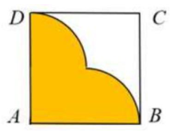

ĐỀ THI TOÁN - ĐỀ SỐ 52 HOT
Phần I: Trắc Nghiệm Nhiều Lựa Chọn
Tóm tắt kiến thức: Tính đơn điệu của hàm số
Hàm số nghịch biến trên khoảng \((a; b)\) nếu đạo hàm \( f'(x) < 0 \) trên khoảng đó, xác định từ đồ thị hoặc bảng biến thiên.
Câu 1:
Cho hàm số \( y = f(x) \) có đồ thị như hình bên. Hàm số đã cho nghịch biến trên khoảng nào dưới đây?

Chọn đáp án:
Lời giải:
Dựa vào đồ thị, hàm số nghịch biến trên khoảng \( (-1; 1) \), nơi giá trị hàm giảm khi \( x \) tăng.
Đáp án: D.
Tóm tắt kiến thức: Cấp số nhân
Cấp số nhân có số hạng \( u_n = u_1 \cdot q^{n-1} \), công bội \( q = \frac{u_{n+1}}{u_n} \).
Câu 2:
Cho cấp số nhân \( (u_n) \) biết \( u_1 = 2 \), \( u_2 = 1 \). Công bội của cấp số nhân đó là:
Chọn đáp án:
Lời giải:
Ta có: \( u_2 = u_1 \cdot q \Rightarrow q = \frac{u_2}{u_1} = \frac{1}{2} \).
Đáp án: D.
Tóm tắt kiến thức: Tích phân
Nguyên hàm của \( e^x \) là \( e^x \). Tích phân xác định: \( \int_a^b f(x) \, dx = F(b) - F(a) \).
Câu 3:
Tích phân \( \int_0^1 e^x \, dx \) bằng:
Chọn đáp án:
Lời giải:
Ta có: \( \int_0^1 e^x \, dx = \left. e^x \right|_0^1 = e^1 - e^0 = e - 1 \).
Đáp án: B.
Tóm tắt kiến thức: Thể tích khối chóp
Thể tích khối chóp: \( V = \frac{1}{3} \cdot S_{\text{đáy}} \cdot h \). Chiều cao: \( h = \frac{3V}{S_{\text{đáy}}} \).
Câu 4:
Cho khối chóp có thể tích bằng \( 18 \, \text{cm}^3 \) và diện tích đáy bằng \( 9 \, \text{cm}^2 \). Chiều cao của khối chóp đó là:
Chọn đáp án:
Lời giải:
Chiều cao của khối chóp: \( h = \frac{3V}{S_{\text{đáy}}} = \frac{3 \cdot 18}{9} = 6 \, \text{cm} \).
Đáp án: B.
Tóm tắt kiến thức: Bất phương trình logarit
Bất phương trình \( \log_a b < c \Leftrightarrow b < a^c \) (nếu \( a > 1 \)), kèm điều kiện \( b > 0 \).
Câu 5:
Tập nghiệm của bất phương trình \( \log_2 (3x + 1) < 2 \) là:
Chọn đáp án:
Lời giải:
Điều kiện: \( 3x + 1 > 0 \Rightarrow x > -\frac{1}{3} \).
Bất phương trình: \( \log_2 (3x + 1) < 2 \Rightarrow 3x + 1 < 2^2 = 4 \Rightarrow 3x < 3 \Rightarrow x < 1 \).
Tập nghiệm: \( \left( -\frac{1}{3}; 1 \right) \).
Đáp án: C.
Tóm tắt kiến thức: Nguyên hàm
Nguyên hàm của \( -\frac{1}{\sin^2 x} = -\csc^2 x \) là \( \cot x + C \).
Câu 6:
Họ các nguyên hàm của hàm số \( f(x) = -\frac{1}{\sin^2 x} \) là:
Chọn đáp án:
Lời giải:
Ta có: \( \int \left( -\frac{1}{\sin^2 x} \right) \, dx = \int (-\csc^2 x) \, dx = \cot x + C \).
Đáp án: C.
Tóm tắt kiến thức: Tiệm cận ngang
Tiệm cận ngang của hàm \( y = \frac{ax + b}{cx + d} \): \( y = \lim_{x \to \pm \infty} \frac{a}{c} \) (nếu \( c \neq 0 \)).
Câu 7:
Đường tiệm cận ngang của đồ thị hàm số \( y = \frac{2 - x}{2x + 1} \) là:
Lời giải:
Ta có: \( \lim_{x \to \pm \infty} \frac{2 - x}{2x + 1} = \lim_{x \to \pm \infty} \frac{\frac{2}{x} - 1}{2 + \frac{1}{x}} = \frac{-1}{2} = -\frac{1}{2} \).
Do đó, đồ thị có tiệm cận ngang là \( y = -\frac{1}{2} \).
Đáp án: C.
Tóm tắt kiến thức: Căn thức
Căn bậc \( n \) của \( x^m \): \( \sqrt[n]{x^m} = x^{\frac{m}{n}} \) (với \( x > 0 \)).
Câu 8:
Với \( x \) là số thực dương tùy ý, \( \sqrt[3]{x^5} \) bằng:
Chọn đáp án:
Lời giải:
Ta có: \( \sqrt[3]{x^5} = x^{\frac{5}{3}} \).
Đáp án: D.
Tóm tắt kiến thức: Mặt phẳng song song
Mặt phẳng song song với \( ax + by + cz + d = 0 \) có dạng \( ax + by + cz + k = 0 \). Thay điểm để tìm \( k \).
Câu 9:
Trong không gian \( Oxyz \), cho điểm \( A(-4; 0; 1) \) và mặt phẳng \( (P): x - 2y - z + 4 = 0 \). Mặt phẳng \( (Q) \) đi qua điểm \( A \) và song song với mặt phẳng \( (P) \). Phương trình của mặt phẳng \( (Q) \) là:
Chọn đáp án:
Lời giải:
Mặt phẳng \( (Q) \) song song với \( (P): x - 2y - z + 4 = 0 \), nên có dạng: \( x - 2y - z + k = 0 \).
\( (Q) \) đi qua \( A(-4; 0; 1) \): \( -4 - 2 \cdot 0 - 1 + k = 0 \Rightarrow k = 5 \).
Phương trình: \( x - 2y - z + 5 = 0 \).
Đáp án: D.
Tóm tắt kiến thức: Khoảng cách giữa hai mặt phẳng song song
Khoảng cách giữa hai mặt phẳng \( ax + by + cz + d_1 = 0 \) và \( ax + by + cz + d_2 = 0 \): \( d = \frac{|d_2 - d_1|}{\sqrt{a^2 + b^2 + c^2}} \).
Câu 10:
Trong không gian \( Oxyz \), cho điểm \( A(-4; 0; 1) \) và mặt phẳng \( (P): x - 2y - z + 4 = 0 \). Mặt phẳng \( (Q) \) đi qua điểm \( A \) và song song với mặt phẳng \( (P) \). Khoảng cách giữa hai mặt phẳng \( (P) \) và \( (Q) \) bằng:
Chọn đáp án:
Lời giải:
Từ Câu 9, \( (Q): x - 2y - z + 5 = 0 \), \( (P): x - 2y - z + 4 = 0 \).
Khoảng cách: \( d = \frac{|5 - 4|}{\sqrt{1^2 + (-2)^2 + (-1)^2}} = \frac{1}{\sqrt{6}} = \frac{\sqrt{6}}{6} \).
Đáp án: B.
Tóm tắt kiến thức: Trung vị mẫu số liệu ghép nhóm
Trung vị là giá trị tại vị trí \( \frac{n}{2} \) (nếu \( n \) chẵn). Với số liệu ghép nhóm, xác định nhóm chứa trung vị.
Câu 11:
Thời gian chạy cự li 100 m (đơn vị: giây) của 40 học sinh được cho bởi mẫu số liệu ghép nhóm sau:
| Thời gian (giây) | \([12; 16)\) | \([16; 20)\) | \([20; 24)\) | \([24; 28)\) | \([28; 32)\) |
|---|---|---|---|---|---|
| Số học sinh | 6 | 17 | 11 | 4 | 2 |
Nhóm chứa trung vị của mẫu số liệu trên là:
Chọn đáp án:
Lời giải:
Tổng số học sinh: \( n = 6 + 17 + 11 + 4 + 2 = 40 \).
Trung vị tại vị trí \( \frac{n}{2} = 20 \). Tính tần số tích lũy:
- \([12; 16)\): 6 học sinh.
- \([16; 20)\): \( 6 + 17 = 23 \) học sinh (chứa vị trí 20).
Do đó, trung vị thuộc nhóm \( [16; 20) \).
Đáp án: D.
Tóm tắt kiến thức: Vectơ trong hình hộp
Trong hình hộp, vectơ được biểu diễn qua các cạnh. Trung điểm chia đoạn thẳng theo tỷ lệ 1:1.
Câu 12:
Cho hình hộp \( ABCD.EFGH \). Gọi \( O \) là trung điểm \( CH \). Khẳng định nào sau đây là đúng?
Chọn đáp án:
Lời giải:
\( O \) là trung điểm \( CH \), nên: \( \overrightarrow{BO} = \frac{1}{2} (\overrightarrow{BC} + \overrightarrow{BH}) \).
Ta có: \( \overrightarrow{BH} = \overrightarrow{BA} + \overrightarrow{AD} + \overrightarrow{BF} = \overrightarrow{BA} + \overrightarrow{BC} + \overrightarrow{BF} \).
Do đó: \( \overrightarrow{BO} = \frac{1}{2} (\overrightarrow{BC} + \overrightarrow{BA} + \overrightarrow{BC} + \overrightarrow{BF}) = \frac{1}{2} \overrightarrow{BA} + \overrightarrow{BC} + \frac{1}{2} \overrightarrow{BF} \).
Đáp án: A.
Phần II: Trắc Nghiệm Đúng/Sai
Tóm tắt kiến thức: Mặt phẳng vuông góc
Vectơ pháp tuyến của mặt phẳng vuông góc: \( \overrightarrow{n_Q} = [\overrightarrow{AB}, \overrightarrow{n_P}] \). Khoảng cách từ điểm đến mặt phẳng: \( d = \frac{|ax_0 + by_0 + cz_0 + d|}{\sqrt{a^2 + b^2 + c^2}} \).
Câu 13:
Trong không gian với hệ tọa độ \( Oxyz \), cho hai điểm \( A(1; 2; -1) \), \( B(2; 1; 0) \) và mặt phẳng \( (P): 2x + y - 3z + 1 = 0 \). Gọi \( (Q) \) là mặt phẳng chứa \( A, B \) và vuông góc với \( (P) \). Xét các phát biểu sau:
Chọn đáp án cho từng phát biểu:
a)
b)
c)
d)
Lời giải:
a) Đúng. Mặt phẳng \( (P): 2x + y - 3z + 1 = 0 \) có vectơ pháp tuyến \( (2; 1; -3) \).
b) Sai. \( \overrightarrow{AB} = (1; -1; 1) \), \( \overrightarrow{n_P} = (2; 1; -3) \). Vectơ pháp tuyến của \( (Q) \): \( \overrightarrow{n_Q} = [\overrightarrow{AB}, \overrightarrow{n_P}] = (-2; -5; -3) \), không phải \( (2; 1; -3) \).
c) Đúng. Phương trình \( (Q) \) qua \( A(1; 2; -1) \), vectơ pháp tuyến \( (-2; -5; -3) \): \( -2(x - 1) - 5(y - 2) - 3(z + 1) = 0 \Rightarrow -2x - 5y - 3z + 9 = 0 \). Hệ số: \( a = -2 \), \( b = -5 \), \( c = -3 \Rightarrow a + b + c = -10 \).
d) Sai. Khoảng cách từ \( O(0; 0; 0) \) đến \( (Q): -2x - 5y - 3z + 9 = 0 \): \( d = \frac{|-2 \cdot 0 - 5 \cdot 0 - 3 \cdot 0 + 9|}{\sqrt{(-2)^2 + (-5)^2 + (-3)^2}} = \frac{9}{\sqrt{38}} = \frac{9\sqrt{38}}{38} \neq \frac{15\sqrt{38}}{38} \).
Đáp án: a) Đúng, b) Sai, c) Đúng, d) Sai.
Tóm tắt kiến thức: Đạo hàm và cực trị
Đạo hàm của \( p(t) = \frac{1}{1 + a e^{-kt}} \). Tốc độ cực đại khi đạo hàm bậc hai bằng 0 hoặc phân tích hàm.
Câu 14:
Trong một số trường hợp, tin đồn lan truyền và được mô hình hóa bằng hàm số \( p(t) = \frac{1}{1 + a e^{-kt}} \), trong đó \( p(t) \) là tỉ lệ dân số biết tin đồn tại thời điểm \( t \) (giờ) và \( a, k \) là hằng số dương. Giả sử \( a = 10 \) và \( k = 0.5 \). Khi đó:
Chọn đáp án cho từng phát biểu:
a)
b)
c)
d)
Lời giải:
a) Đúng. \( \lim_{t \to +\infty} p(t) = \lim_{t \to +\infty} \frac{1}{1 + 10 e^{-0.5t}} = \frac{1}{1 + 0} = 1 \).
b) Sai. Tính đạo hàm: \( p(t) = (1 + 10 e^{-0.5t})^{-1} \), \( p'(t) = -(-1)(1 + 10 e^{-0.5t})^{-2} \cdot (-10 \cdot 0.5 e^{-0.5t}) = \frac{5 e^{-0.5t}}{(1 + 10 e^{-0.5t})^2} \), không phải \( \frac{10 e^{-0.5t}}{(1 + 10 e^{-0.5t})^2} \).
c) Sai. Đặt \( u = 10 e^{-0.5t} \), \( p'(t) = \frac{5 u}{(1 + u)^2} \). Tìm cực trị: \( g(u) = \frac{u}{(1 + u)^2} \), \( g'(u) = \frac{1 - u}{(1 + u)^3} = 0 \Rightarrow u = 1 \). Khi \( u = 10 e^{-0.5t} = 1 \Rightarrow e^{-0.5t} = \frac{1}{10} \Rightarrow t = 2 \ln 10 \approx 4.6 \neq 9.2 \).
d) Đúng. Tại \( t = 2 \ln 10 \), \( p(t) = \frac{1}{1 + 10 e^{-0.5 \cdot 2 \ln 10}} = \frac{1}{1 + 10 \cdot \frac{1}{10}} = \frac{1}{2} = 50\% \).
Đáp án: a) Đúng, b) Sai, c) Sai, d) Đúng.
Tóm tắt kiến thức: Xác suất có điều kiện
Công thức Bayes: \( P(A|\bar{B}) = \frac{P(A \cap \bar{B})}{P(\bar{B})} \). Xác suất toàn phần: \( P(\bar{B}) = P(A)P(\bar{B}|A) + P(\bar{A})P(\bar{B}|\bar{A}) \).
Câu 15:
Trong một kỳ thi tốt nghiệp trung học phổ thông, một tỉnh \( X \) có 70% học sinh lựa chọn tổ hợp A00 (gồm các môn Toán, Vật lý, Hóa học). Biết rằng, nếu một học sinh chọn tổ hợp A00 thì xác suất để học sinh đó đỗ đại học là 0.55; còn nếu học sinh không chọn tổ hợp A00 thì xác suất để học sinh đỗ đại học là 0.6. Chọn ngẫu nhiên một học sinh của tỉnh \( X \) đã tốt nghiệp trung học phổ thông trong kỳ thi trên. Gọi \( A \): "Chọn được học sinh lựa chọn khối A00"; \( B \): "Chọn được học sinh đỗ đại học". Xét các phát biểu sau:
Chọn đáp án cho từng phát biểu:
a)
b)
c)
d)
Lời giải:
a) Đúng. \( P(A) = 0.7 \), \( P(\bar{A}) = 1 - 0.7 = 0.3 \).
b) Sai. \( P(B|\bar{A}) = 0.6 \Rightarrow P(\bar{B}|\bar{A}) = 1 - 0.6 = 0.4 \neq 0.45 \).
c) Sai. \( P(\bar{B}|A) = 1 - 0.55 = 0.45 \), \( P(\bar{B}|\bar{A}) = 0.4 \). Xác suất: \( P(A|\bar{B}) = \frac{P(A)P(\bar{B}|A)}{P(A)P(\bar{B}|A) + P(\bar{A})P(\bar{B}|\bar{A})} = \frac{0.7 \cdot 0.45}{0.7 \cdot 0.45 + 0.3 \cdot 0.4} = \frac{0.315}{0.315 + 0.12} = \frac{21}{29} \neq \frac{22}{29} \).
d) Sai. \( P(\bar{A}|\bar{B}) = 1 - P(A|\bar{B}) = 1 - \frac{21}{29} = \frac{8}{29} \neq \frac{7}{29} \).
Đáp án: a) Đúng, b) Sai, c) Sai, d) Sai.
Tóm tắt kiến thức: Thể tích khối giao nhau
Thể tích khối giao của hai hình trụ vuông góc: \( V = \int_{-R}^{R} S(x) \, dx \), với \( S(x) \) là diện tích thiết diện.
Câu 16:
Cho hai hình trụ có cùng bán kính bằng 3 được đặt lồng vào nhau sao cho trục của hai hình trụ vuông góc với nhau và cắt nhau tại \( O \) (Hình 1). Gọi \( (H) \) là phần giao nhau của hai hình trụ (Hình 2). Chọn trục \( Ox \) vuông góc với hai trục của hình trụ như hình vẽ. Cắt khối \( (H) \) bởi mặt phẳng vuông góc với trục \( Ox \) tại điểm có hoành độ \( x (-3 \leq x \leq 3) \) ta được thiết diện có diện tích là \( S(x) \).


Chọn đáp án cho từng phát biểu:
a)
b)
c)
d)
Lời giải:
a) Sai. Khối \( (H) \) là giao của hai hình trụ vuông góc, không phải khối tròn xoay.
b) Sai. Công thức thể tích: \( V = \int_{-3}^{3} S(x) \, dx \), không phải \( \pi \int_{-3}^{3} S^2(x) \, dx \).
c) Sai. Thiết diện là hình vuông cạnh \( h = 2\sqrt{9 - x^2} \), nên \( S(x) = h^2 = 4(9 - x^2) \), không phải \( 2(9 - x^2) \).
d) Đúng. Thể tích: \( V = \int_{-3}^{3} 4(9 - x^2) \, dx = 4 \left[ 9x - \frac{x^3}{3} \right]_{-3}^{3} = 4 \cdot (27 - 9 - (-27 + 9)) = 144 \).
Đáp án: a) Sai, b) Sai, c) Sai, d) Đúng.
Phần III: Trắc Nghiệm Trả Lời Ngắn
Tóm tắt kiến thức: Khoảng cách giữa hai đường thẳng chéo nhau
Khoảng cách giữa hai đường thẳng chéo nhau là độ dài đoạn vuông góc chung, tính qua công thức \( \frac{1}{d^2} = \frac{1}{a^2} + \frac{1}{b^2} \).
Câu 17:
Cho chóp \( S.ABC \) có đáy \( ABC \) là tam giác vuông cân tại \( A \), tam giác \( SBC \) là tam giác đều cạnh 1 và thuộc mặt phẳng vuông góc với đáy. Tính khoảng cách giữa hai đường thẳng \( SA \) và \( BC \) (làm tròn kết quả đến hàng phần trăm).
Nhập đáp án:
Lời giải:
Gọi \( H \) là trung điểm \( BC \), thì \( SH \perp BC \). Vì \( (SBC) \perp (ABC) \), nên \( SH \perp (ABC) \).
Trong tam giác đều \( SBC \), cạnh \( BC = 1 \), nên \( SH = \frac{\sqrt{3}}{2} \), \( CH = \frac{BC}{2} = \frac{1}{2} \).
Vì \( BC \perp AH \), \( BC \perp SH \), nên \( BC \perp (SHA) \). Dựng \( HK \perp SA \), thì \( HK \) là đoạn vuông góc chung.
Tính: \( \frac{1}{HK^2} = \frac{1}{SH^2} + \frac{1}{HC^2} = \frac{1}{\left(\frac{\sqrt{3}}{2}\right)^2} + \frac{1}{\left(\frac{1}{2}\right)^2} = \frac{4}{3} + 4 = \frac{16}{3} \Rightarrow HK^2 = \frac{3}{16} \Rightarrow HK = \frac{\sqrt{3}}{4} \approx 0.43 \).
Đáp án: 0.43.
Tóm tắt kiến thức: Xác suất có điều kiện
Công thức Bayes: \( P(A|B) = \frac{P(A)P(B|A)}{P(B)} \), với \( P(B) = P(A)P(B|A) + P(\bar{A})P(B|\bar{A}) \).
Câu 18:
Hai tên cướp bịt mặt tấn công một ngân hàng. Tuy nhiên, người thu ngân đã kịp thời nhấn chuông báo động và khóa cửa ra vào. Các tên cướp nhận ra rằng chúng đã mắc kẹt, và quyết định cải trang và trà trộn vào đám đông. Đối mặt với 40 người trong ngân hàng đều tuyên bố mình vô tội, cảnh sát dùng máy phát hiện nói dối với xác suất phát hiện tên cướp là 0.85, xác suất một người vô tội bị máy báo động là 0.08. Tính xác suất ông Tuấn là một trong hai tên cướp, biết rằng ông Tuấn bị máy phát hiện nói dối. Kết quả làm tròn đến hàng phần trăm.
Nhập đáp án:
Lời giải:
Gọi \( A \): "Ông Tuấn là một trong hai tên cướp"; \( B \): "Máy phát hiện nói dối báo động".
Dữ kiện: \( P(A) = \frac{2}{40} = 0.05 \), \( P(\bar{A}) = 0.95 \), \( P(B|A) = 0.85 \), \( P(B|\bar{A}) = 0.08 \).
Tính: \( P(B) = P(A)P(B|A) + P(\bar{A})P(B|\bar{A}) = 0.05 \cdot 0.85 + 0.95 \cdot 0.08 = 0.0425 + 0.076 = 0.1185 \).
Xác suất: \( P(A|B) = \frac{P(A)P(B|A)}{P(B)} = \frac{0.05 \cdot 0.85}{0.1185} = \frac{0.0425}{0.1185} \approx 0.36 \).
Đáp án: 0.36.
Tóm tắt kiến thức: Thể tích khối tròn xoay
Thể tích khối tròn xoay quanh trục \( Ox \): \( V = \pi \int_a^b y^2 \, dx \). Tích phân được chia theo đoạn nếu hàm thay đổi.
Câu 19:
Thầy Tuấn sử dụng một tấm kim loại phẳng có dạng như hình vẽ để chế tạo vật trang trí bằng cách cho phần vật liệu quay quanh trục \( Ox \). Biết rằng phần vật liệu được giới hạn bởi các đường \( y = 0 \), \( x = 0 \), \( x = 2 \), cung tròn \( y = \sqrt{1 - (x - 1)^2} \) và đường cong \( y = 1 - (x - 1)^2 \). Tính thể tích của vật trang trí (làm tròn đến hàng phần mười, đơn vị \( \text{cm}^3 \)).

Nhập đáp án:
Lời giải:
Đường tròn tâm \( F(1; 0) \), đường kính \( AB = 2 \): \( (x - 1)^2 + y^2 = 1 \). Cung trên: \( y = \sqrt{1 - (x - 1)^2} \).
Thể tích khối tròn xoay:
- Từ \( x = 0 \) đến \( x = 1 \): \( y = \sqrt{1 - x^2} + 1 \).
- Từ \( x = 1 \) đến \( x = 2 \): \( y = 1 - (x - 1)^2 \).
Thể tích: \( V = \pi \int_0^1 \left( \sqrt{1 - x^2} + 1 \right)^2 \, dx + \pi \int_1^2 \left( 1 - (x - 1)^2 \right)^2 \, dx \approx 12.3 \, \text{cm}^3 \).
Đáp án: 12.3.
Tóm tắt kiến thức: Tối ưu hóa trên mặt cầu
Tối ưu hóa biểu thức liên quan đến hai điểm trên mặt cầu bằng cách sử dụng tích vô hướng và điều kiện khoảng cách cố định.
Câu 20:
Trong một phần mềm 3D mô phỏng một trò chơi điện tử, có hai chất điểm \( A, B \) luôn chuyển động trên mặt cầu \( (S) \) và cách nhau một khoảng không đổi bằng 1. Nếu đặt trong không gian tọa độ \( Oxyz \), mặt cầu \( (S) \) có phương trình là \( (x - 3)^2 + (y + 4)^2 + z^2 = 4 \). Tìm giá trị nhỏ nhất của biểu thức \( OA^2 - OB^2 \).
Nhập đáp án:
Lời giải:
Mặt cầu \( (S) \): tâm \( I(3; -4; 0) \), bán kính \( R = 2 \). \( OI = \sqrt{3^2 + (-4)^2 + 0^2} = 5 > R \), nên \( O \) ngoài mặt cầu.
Ta có: \( OA^2 - OB^2 = (\overrightarrow{OI} + \overrightarrow{IA})^2 - (\overrightarrow{OI} + \overrightarrow{IB})^2 = 2 \overrightarrow{OI} \cdot (\overrightarrow{IA} - \overrightarrow{IB}) = 2 \overrightarrow{OI} \cdot \overrightarrow{BA} \).
Vì \( AB = 1 \), \( OI = 5 \): \( OA^2 - OB^2 = 2 \cdot 5 \cdot 1 \cdot \cos(\overrightarrow{OI}, \overrightarrow{BA}) \geq -10 \). Giá trị nhỏ nhất đạt khi \( \overrightarrow{OI} \) và \( \overrightarrow{BA} \) ngược hướng.
Đáp án: -10.
Tóm tắt kiến thức: Hàm số và cực trị
Tìm hàm số thỏa mãn các điều kiện về cực trị và điểm đi qua, sau đó giải phương trình để tìm giá trị cần thiết.
Câu 21:
Đường đi của một khinh khí cầu được mô phỏng trong hệ trục tọa độ là một phần của đường cong \( y = \frac{a(x - 1)(x - 8)}{x + d} \), đơn vị là km. Biết rằng điểm cực đại của đồ thị hàm số là điểm \( (6; 5) \). Hỏi khi khí cầu đi qua điểm cực đại và cách mặt đất 3875 m thì khí cầu cách gốc tọa độ theo phương ngang bao nhiêu? (đơn vị: km).
Nhập đáp án:
Lời giải:
Hàm số: \( y = \frac{a(x - 1)(x - 8)}{x + d} \). Điểm cực đại tại \( (6; 5) \).
Thay \( x = 6 \), \( y = 5 \): \( 5 = \frac{a(6 - 1)(6 - 8)}{6 + d} \Rightarrow 5 = \frac{a \cdot 5 \cdot (-2)}{6 + d} \Rightarrow -10a = 5(6 + d) \).
Đường thẳng qua hai cực trị: \( y = a(2x - 9) \), qua \( (6; 5) \): \( 5 = a(12 - 9) \Rightarrow a = \frac{5}{3} \).
Thay \( a = \frac{5}{3} \): \( -10 \cdot \frac{5}{3} = 5(6 + d) \Rightarrow d = -\frac{28}{3} \).
Hàm số: \( y = \frac{\frac{5}{3}(x - 1)(x - 8)}{x - \frac{28}{3}} = \frac{5x^2 - 45x + 40}{3x - 28} \).
Khi \( y = 3.875 \): \( \frac{5x^2 - 45x + 40}{3x - 28} = 3.875 \Rightarrow 5x^2 - 45x + 40 = 3.875(3x - 28) \Rightarrow 5x^2 - 56.625x + 148.5 = 0 \).
Giải: \( x = 7.2 \) hoặc \( x = 4.125 \). Chọn \( x = 7.2 \) (gần điểm cực đại).
Đáp án: 7.2.
Tóm tắt kiến thức: Tổ hợp và dãy Fibonacci
Số cách nhảy của ếch có thể được tính bằng tổ hợp hoặc dãy Fibonacci: \( f(n) = f(n-1) + f(n-2) \).
Câu 22:
Trên hồ có 10 lá cây hoa súng xếp thành một hàng ngang. Trên lá ngoài cùng có một con ếch. Mỗi bước, con ếch sẽ nhảy qua lá kế bên lá nó đang đứng hoặc nhảy bỏ qua lá đó để sang lá tiếp theo. Con ếch không bao giờ nhảy lùi. Hỏi con ếch có bao nhiêu cách để nhảy sang lá ngoài cùng bên phải?
Nhập đáp án:
Lời giải:
Gọi \( f(n) \) là số cách nhảy đến lá thứ \( n \). Ta có:
- \( f(2) = 1 \) (nhảy 1 bước).
- \( f(3) = 2 \) (1+1 hoặc 2).
- \( f(n) = f(n-1) + f(n-2) \) (nhảy 1 hoặc 2 bước).
Tính: \( f(4) = 3 \), \( f(5) = 5 \), \( f(6) = 8 \), \( f(7) = 13 \), \( f(8) = 21 \), \( f(9) = 34 \), \( f(10) = 55 \).
Cách khác: Số bước nhảy 1 (\( a \)) và nhảy 2 (\( b \)) thỏa \( a + 2b = 9 \). Tổng số cách: \( C_{a+b}^a \).
Với \( a = 1, b = 4 \): \( C_5^1 = 5 \); \( a = 3, b = 3 \): \( C_6^3 = 20 \); \( a = 5, b = 2 \): \( C_7^5 = 21 \); \( a = 7, b = 1 \): \( C_8^7 = 8 \); \( a = 9, b = 0 \): \( C_9^9 = 1 \).
Tổng: \( 5 + 20 + 21 + 8 + 1 = 55 \).
Đáp án: 55.